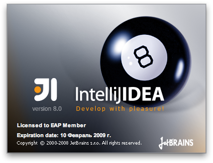
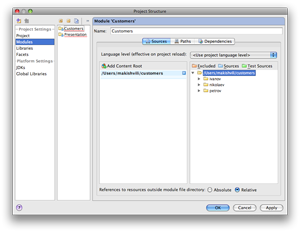

31 января 2009 года состоялся первый Яндекс.Субботник, посвященный клиентской вёрстке. На нем я выступал с докладом на тему “Вёрстка в IntelliJIDEA”. Предлагаю Вашему вниманию мою презентацию, адаптированную под формат статьи из двух частей.
Часть первая
Девиз: «Редактор должен помогать»
Это ключевая мысль, которая поможет мне полноценно раскрыть тему статьи.
На первый взгляд она непонятно звучит. Но это только потому , что я не смог выразить свою мысль очень коротко и одновременно очень точно, без потери смысла. Я объясню, что имел в виду. А объяснить нужно обязательно, потому что это важно для этой статьи.
Помощь – это же наша давнишняя мечта! Помните, Сыроежкин в “Приключениях Электроника” мечтал чтобы вкалывали роботы, а не человек?
Свершилось! Роботов вокруг нас стало так много, что мы перестали замечать их необычность.
Вот на кухне у меня стоит робот – хорошо умеет мыть посуду. Чисто и очень быстро. Называется “посудомойка”. А в моем подъезде работает робот, который доставляет меня из квартиры на улицу. Не очень чистый, но тоже быстрый. Называется “лифт”.
А с какими роботами я, верстальщик, общаюсь каждый день? Да вот – с компьютером, который стоит на моем столе. Светится надгрызанным яблоком. А внутри него еще один робот – программа, в которой я пишу код. Пишу каждый день, по 8 часов в день. И по сути пишу-то одно и то же – какой-то ограниченный набор HTML-тегов, какой-то ограниченный набор CSS-свойств.
Одно и то же! Каждый день! 8 часов в день, 5 дней в неделю, 22 дня в месяц, 11 месяцев в году – одно и то же!
И ведь было время, когда редакторы нам не помогали. Notepad виндовый никогда нам не помогал. А порой даже вредил. Вы пробовали в нем открыть файлик больше 1 Mb?
В нотпаде мы писали каждый символ вот этими руками, мы в нем читали нерасцвеченный код. Нам было трудно, мы писали медленно и с кучей ошибок. Но, правда, мы гордились, что писали каждый символ в своем коде и героически справлялись с трудностями. Мы чувствовали свой код на кончиках пальцев и были собой довольны.
А потом нам на помощь пришли модификации нотпада с полезными фичами. Небольшими такими «фичками»: подсветкой синтаксиса и автокомплитом. Стало быстрее. Стало удобнее. А главное – стало легче.
А потом пришли редакторы, которые из GUI нам давали возможность верстать и при этом почти не знать HTML/CSS. Стало совсем легко! Вот так берете мышкой, накидали в документ контролов, перетусовали их как-то по-красивее, создали несколько таких страниц, залинковали их друг с друг. А потом отодвинулись от монитора – посмотрели так критически, как художник на полотно, наклонив голову. «А хорошо получается»! И запулили свой сайт в интернет, а потом обязательно (обязательно!) URL всем своим знакомым раздали! И так, мол: «Хороший сайт… зайди!» Только эта легкость привела к тому, что интернет заполнился тоннами некачественного кода. Ну, а чё – легко же?
Но, славтегосподи, пришли хорошие редакторы и IDE (среды разработки), которые позволили писать и легко и качественно. Правда, все домохозяйки и домохозяины так и продолжали писать в гуевых редакторах, а специалисты – ну такие крутые ребята и девчата, как мы с вами, – стали писать в IDE. И стал интернет лучше.
А как эти IDE стали нам помогать?
А они стали выполнять за нас рутинную работу: много мелких рутинных действий, но большое количество, которые отнимали у нас 80% времени. А сейчас программа делает их сама. Или мы просим её своими какими-то несложными действиями. А нам остается только творчество – творчество в том, чтобы максимально виртуозно писать вот тот ограниченный набор HTML-тегов и CSS-свойств.
И что получается? Чем виртуознее я пишу свой код, и чем больше функций на себя берет конкретная IDE – сама берет, – тем лучше и надёжнее получается продукт. А значит, я доволен, мной довольны, и всё лучше и лучше становится интернет. :)
Ну и вот.
Мы в группе HTML-верстки Яндекса считаем, что (нет, я, конечно, понимаю, что мы нерепрезентативны, но мы так считаем!) что IntelliJIDEA чудесно справляется с задачей взять на себя максимум рутины и оставить нам только творческую сторону вёрстки. И я хотел бы вам рассказать, как она это делает и какую пользу получаю при этом я. Я – Вадим Макишвили – гвардии рядовой верстальщик.
IntelliJIDEA – что это?
Есть такая питерская компания JetBrains. Наши русские ребята. Общительные и адекватные. Делают качественные продукты. IntelliJIDEA – их продукт.
Если пятью словами, то IntelliJIDEA – это среда разработки для Java. А если образно, то ИнтелиджиАйдию можно представить себе эдаким большим кухонным комбайном, в котором можно приготовить много вкусных и разнообразных блюд из Java. А какие блюда готовятся из Java в последнее время? Всё больше такие вкусные блюда, которые называют Web-приложениями. А в них кладётся не только Java, а ещё и такие базовые для этих блюд ингридиенты, как HTML/CSS/Javascript.
И вполне логично, что в этом кухонном комбайне должна быть поддержка этих базовых ингридиентов. И точно! Она есть и весьма недурственна.
А вообще мое знакомство с IntelliJIDEA произошло 5 лет назад. Я тогда работал в большой офшорной компании. Кем работал? Да всё тем же, кем и сейчас – верстальщиком. Но тогда, 5 лет назад, меня вдруг переклинило: «Хватит, наверстался! Пора бы чем-то серьёзным заняться.“ А что тогда было серьезное? Java и .NET. И я пошел в соседние Java-отделы (у нас их было два) с вопросом: “А в чём вы пишете?”
И я выяснил, что Java-программисты делятся на два лагеря. Отличительный признак каждого лагеря – программа, в которой они пишут код. И у них даже свои давнишние холивары по поводу этих IDE. А IDE любят две, которые примерно равнозначны для разработки Java. Но у каждой есть по главному преимуществу:
У одной из них привычный и интуитивно понятный интерфейс
А вторая… бесплатная.
Ну я и подумал: «А когда это русский человек боялся платного софта?» и поставил IntelliJIDEA. Я ее поставил, запустил. Она открылась, а там всё так красиво и по-взрослому. Но следующим шагом она меня попросила создать ПРОЕКТ. «Хм, зачем мне проект, я ж просто “Hello World” написать хочу?» – подумал я, но честно попытался пробраться сквозь все визарды создания проекта. Не пробрался. Закрыл и подумал: «Чё-то там перепутали про интуитивный и привычный интерфейс. Ща Эклипс поставлю, уж там-то точно!».
Кстати, Эклипс я даже поднять после установки не смог. Я тогда на винде работал и не знал, что нужно отдельно Java-машину ставить.
Но главное, что я тогда, 5 лет назад, запомнил – это то смятение, которое у меня вызвала Идея, предложив пройти через визарды настройки проекта.
И сейчас я лично знаю людей, которые так же, как я тогда – 5 лет назад, – сунулись в Идею, и ничего не поняв в этих визардах, ушли из нее. Так её и не узнав. А ведь она удивительно хороша ;–)
Вхождение в IntelliJIDEA
Не побоюсь признаться, если ты не Java-программист, понять самому, как начать работать в Идее – очень трудно. Трудно по единственной причине – в визардах создания проекта задаются очень непонятные для верстальщика вопросы, на которые отвечать как-то… Боязно, знаете ли :)
А знаете, что мне напоминает Идея? Черное Море в начале лета в Крыму. Когда солнце яркое и уже жарко, а море прогрелось еще недостаточно. И купаться уже хочется, но вода такая прохладная и тебе боязно. И ты так, ногой трогаешь ее – брррр, холодно. Но так хочется! И единственный способ зайти в воду – это так хорошенько разбежаться, зажмуриться и с гиканьем вбежать в воду по колено, а потом с зажмуренными глазами нырнуть головой вперед, сделать пару больших гребков под водой, а потом вынырнуть на поверхность и всё! Ты в море! Тебе хорошо.
Вот и в Идею нужно так же решительно вбежать, пронырнуть через эти ужасные визарды и тогда окажешься там, где уже хорошо и где привычный интуитивно понятный интерфейс. А ещё легче в море вбегать с кем-то. С таким человеком, кто только что искупался. И он тебя хватает за руку, тащит в воду и вы вдвоем ныряете в прозрачную волну ;–)
Вот так, больше 2 лет назад я нырнул в IntelliJIDEA вместе с Виталей Харисовым, а сейчас у вас есть шанс нырнуть в нее вместе со мной. Ныряем?
Установка IntelliJIDEA
Установка не вызывает никаких трудностей. Ну то есть вообще: скачали, установили, открыли. IDEA идет вместе с Java-машиной, ставить отдельно не нужно. Это я для виндоуз пользователей сообщаю :)
При первом запуске IDEA задаст вам несколько несложных вопросов. Вот для HTML-верстальщиков подсказки, как на эти вопросы ответить.
Идея интересуется, пользовались ли вы ей уже когда-либо и если пользовались, то укажите путь к предыдущей инсталляции – Идея заберет оттуда настройки рабочей среды. Мы будем исходить из посылки, что вы впервые поставили IDEA, поэтому оставляем дефолтное значение.

А тут нас спрашивают про деньги. Пока не платим, выбираем 30-дневный триал.
{kind=link}
В этом вам предлагают выбрать, какие Системы Контроля Версий вам нужны для работы. Мне нужны SVN и CVS. Обратите внимание, есть плагин для работы с Git :)
{kind=link}
А дальше будут три настроечных визарда для выбора необязательных плагинов, которые поставляются в коробке инсталляции. В этом вам предлагают выбрать плагины для работы с Java. Снимаем все чекбоксы – нам этого ничего не нужно.
{kind=link}
В этом визарде предлагается выбрать плагины для HTML-верстки. Выбираем всё, кроме, разве что, поддержки Flex.
{kind=link}
А в этом визарде разработчики из JetBrains обращают наше внимание на другие плагины, которые в той или иной степени полезны. Я отметил те, которые точно нужны мне, верстальщику Яндекса.
{kind=link}
А теперь мы видим сплеш-заставку, которую будем наблюдать каждый раз при загрузке программы. Раньше здесь был логотип программы, сейчас бильярдный шар. Почему шар – непонятно. Но красиво :)

Еще мы видим Expiration Date – дату, когда наш триал закончится. Мы пользуемся EAP версиями (Early Access Program). То есть промежуточными сборками, которые выходят много чаще, чем раз в тридцать дней. Поэтому если пользоваться продуктом хочется, а с деньгами расставаться не очень, качайте и пользуйтесь EAP.
Только об одном Вас попрошу:
Если используете EAP версии – пользуйтесь с пользой для продукта: если Идея вам сообщит, что возникла ошибка, не поленитесь, отправьте багрепорт. Идея сама его сформирует, вам нужно только кнопку Send нажать ;–)
Вот так выглядит Велкам-пейдж после того, как вы поставили и подняли Идею.
{kind=link}
И на этой странице нам предлагается создать Новый Проект. Мы, разработчики Яндекса, привыкли называть Проектом тот Сервис, над которым старательно трудимся, который спустя недели или месяцы труда запускаем, и по поводу которого в официальном блоге Яндекса создается запись «Интернет, такое-то число. Яндекс запустил проект такой-то».
Когда IntelliJIDEA предлагает нам создать Новый Проект, она предполагает, что мы разрабатываем Java-проект и предлагает нам своими визардами создать костяк Java-проекта. Справедливости ради стоит отметить, что сейчас IDEA движется в сторону создания платформы для разработки на других языках.
Но мы – верстальщики. Отдельного билда без поддержки Java для наших нужд не существует, и перед нами стоят две насущные задачи:
Не привязываться к Java
Сделать так, чтобы разработка каждого следующего нашего Сервиса не требовала прохождения визардов создания IDEA project-а
И эти задачи легко решаемы!
Но прежде важно договориться о терминологии, чтобы избежать путаницы. Дальше в статье я буду произносить слова Проект и IDEA Project. Это два разных понятия:
Проект – это разрабатываемый нами Сервис
IDEA Project – это некая мета-сущность, в которой IntelliJIDEA хранит всю информацию о разрабатываемых нами Проектах
Итак, нажимаем ссылку «Создать проект» и погружаемся в визарды.
Это первый визард, в котором выбираем дефолтное значение и создаем структуру IDEA Project начисто.
{kind=link}
Это самый главный визард, в котором мы рассмотрим каждое поле.
Поле “Name” – это имя IDEA Project-а. По дефолту оно называется untitled.
{kind=link}
Наша задача создать его один раз и забыть о нем навсегда. Поэтому имя у него может быть абсолютно любым. У меня рабочий IDEA Project называется Yandex. Наш тестовый IDEA Project хочется назвать как-то совсем непритязательно – назовём его Work
Как только мы изменили имя IDEA Project-а, оно автоматически подставилось в остальные поля визарда. Нам это удобно. Поле “Project file location” – здесь нужно указать место, где Идея создаст IDEA Project file. То есть та самая мета-сущность, о которой я говорил выше, имеет свое физическое представление на файловой системе. Это как раз и есть IDEA Project file.
По дефолту IDEA сама предлагает путь и подставляет имя из предыдущего поля. Можно изменить на что-то другое, но никакого смысла в этом нет. Этот файлик нам нужно один раз создать и мы о нем больше никогда не вспомним.
{kind=link}
Дальше переходим к разделу «Создать модуль». Что такое «Модуль» в терминах Java-проекта, я не знаю. И, в общем-то, знать это мне – верстальщику – не обязательно. Я предлагаю эту сущность задействовать для своих целей. Пусть Модулем будет считаться некая Категория Проектов, объединённая неким общим признаком.
Что за признак? Это вы выбираете сами. Например, создадим группу проектов, объединенных сегодняшним мероприятием и назовем модуль просто Presentation.
{kind=link}
Поле Content Root – это путь к файлам наших Проектов. Идея оставила дефолтный путь, потому что она ничего не знает о том, где конкретно на файловой системе мы храним файлы Проектов. Но я этот путь знаю хорошо и моя задача заменить дефолтный путь на правильный.
Нажимаем на кнопку с многоточием справа от выделенного на скриншоте пути
{kind=link}
И в дополнительном диалоге указываем путь к папке с нашими Проектами.
{kind=link}
Поле “Module File location” оставляем по-дефолту.
То, о чем не сказал на презентации:
Module File – это составная часть IDEA Projects File. Мне нравится, чтобы они хранились рядом – где-нибудь там, где я их никогда видеть не буду. Но после того, как вы актуализируете поле Content Root, путь в поле Module File location сменится на тот же, что и в Content Root. Возможно это удобно для Java-проектов. Но мне не нравится, когда в папках моих Проектов болтаются IDEA Module Files.
Поэтому я руками еще правлю путь, чтобы в итоге визард выглядел так:
{kind=link}
И двигаемся дальше. В следующем визарде нам предлагается указать путь к папке, в которой хранятся исходники Java-файлов проекта. Нам это не нужно – папку не указываем
{kind=link}
Здесь нам предлагается указать, какую JDK мы будем использовать. Нам это тоже не нужно. Идея на всякий случай переспросит, уверены ли мы. Уверены и двигаемся дальше.
{kind=link}
И вот, наконец, мы внутри Идеи.
Мы видим слева sidebar с открытой панелью Project, справа – зона для редактирования. Сейчас она пустая. В панели Project видим модуль Presentation, который смотрит в папку presentation. Внутри нее папки, якобы с материалами сегодняшней встречи. Это как будто отдельные проекты, в разработке которых я участвую.
{kind=link}
Модулей может быть сколько угодно. Повторю, Модулей в смысле групп наших проектов. Если вы фрилансер, то вам может быть удобно работать с проектами, отсортированных по именам своих заказчиков. Предположим, что в корне вашего home есть такая папка customers
{kind=link}
Чтобы добавить новый Модуль, надо пойти в диалог настройки IDEA Project:
{kind=link}
В этом диалоге мы можем редактировать уже созданные модули и создавать новые. Всё, что слева – нам ничего не нужно: ни библиотеки, ни фасеты, ни JDK. Мы же верстальщики и, спасибо, нам этого не нужно. Мы используем единственную вещь – Модули.
Справа контент текущего модуля.
{kind=link}
Клик на плюс нас бросает в визард, который мы с вами уже разбирали Единственное отличие – Idea Project создавать не нужно. Только новый модуль. После заполнения его, мы увидим новый модуль Customers. Мы видим его название, мы видим Content Root для него и видим содержимое Content Root-а. 
{kind=link}
То, о чем не сказал на презентации:
Обратите внимание на кнопку
С помощью этой кнопки можно указать несколько контент рутов для одного модуля. То есть Ваши Проекты могут лежать в совершенно разных папках на файловой системе, но Идея будет работать с ними, как с одним целым.
Главное, что нам дают IDEA Modules
Это возможность не создавать для каждого нового сервиса Idea Project То есть, когда заказчик по фамилии Nikolaev закажет мне создать новый проект, я просто создаю на файловой системе новую директорию в папке nikolaev. И с этим каталогом я могу работать в Идее сразу же.
{kind=link}
На этом первая часть закончена. В ней мы поняли, что такое IntelliJIDEA, как ее установить, как в неё войти и как в ней создать IDEA Project единожды.
Во второй части статьи я расскажу, как IntelliJIDEA забирает у меня рутинную работу, то есть покажу конкретно те вкусности, которые делают мою работу в IDEA быстрой, удобной и продуктивной.